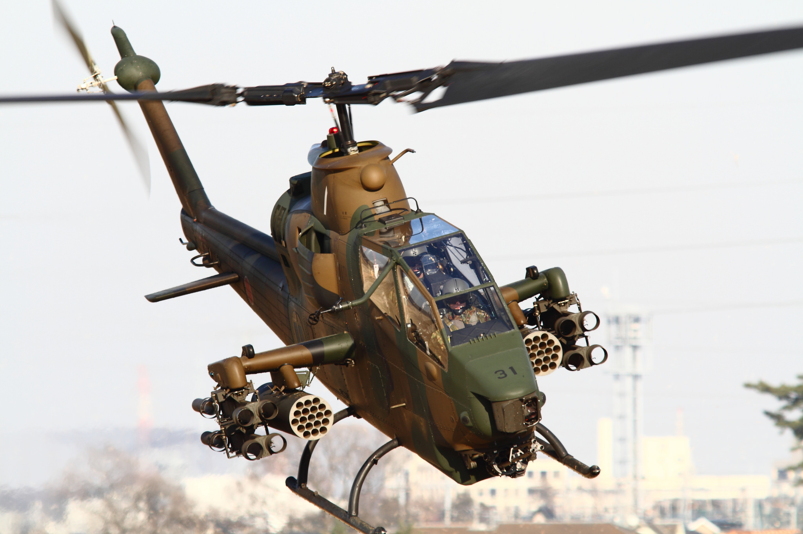
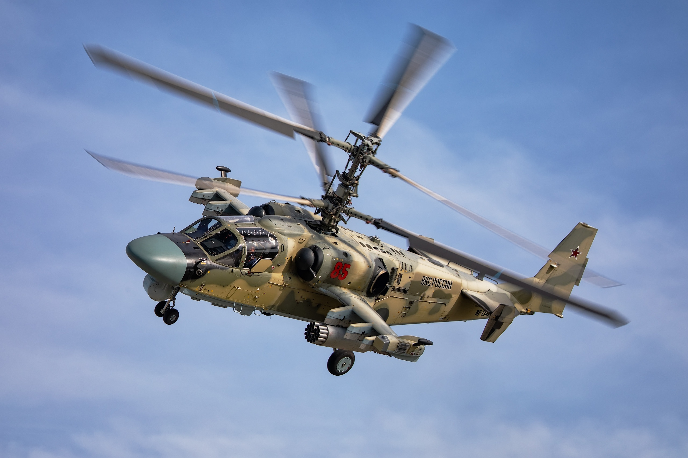
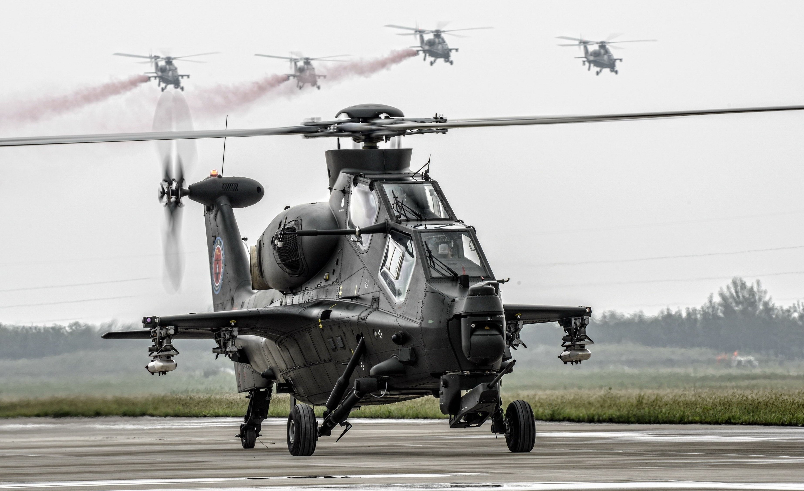

An attack helicopter is an armed helicopter with the primary role of an attack aircraft, with the capability of engaging targets on the ground, such as enemy infantry and armored fighting vehicles. Due to their heavy armament they are sometimes
called helicopter gunships. Weapons used on attack helicopters can include autocannons, machine guns, rockets, and guided anti-tank missiles such as the Hellfire. Many attack helicopters are also capable of carrying air-to-air missiles, though
mostly for purposes of self-defense. Today's attack helicopter has two main roles: first, to provide direct and accurate close air support for ground troops, and second, the anti-tank role to destroy enemy armor concentrations. Attack helicopters
are also used to supplement lighter helicopters in the armed scout role. In combat, an attack helicopter is projected to destroy around 17 times its own production cost before it is destroyed.

Boeing AH-64 Apache
The Boeing AH-64 Apache is an American twin-turboshaft attack helicopter with a tailwheel-type landing gear arrangement and a tandem cockpit for a crew of two. It features a nose-mounted sensor suite for target acquisition and night vision
systems. It is armed with a 30 mm (1.18 in) M230 chain gun carried between the main landing gear, under the aircraft's forward fuselage, and four hardpoints mounted on stub-wing pylons for carrying armament and stores, typically a
mixture of AGM-114 Hellfire missiles and Hydra 70 rocket pods. The AH-64 has significant systems redundancy to improve combat survivability. The Apache began as the Model 77 developed by Hughes Helicopters for the United States Army's
Advanced Attack Helicopter program to replace the AH-1 Cobra. The prototype YAH-64 was first flown on 30 September 1975. The U.S. Army selected the YAH-64 over the Bell YAH-63 in 1976, and later approved full production in 1982. After
purchasing Hughes Helicopters in 1984, McDonnell Douglas continued AH-64 production and development. The helicopter was introduced to U.S. Army service in April 1986. The advanced AH-64D Apache Longbow was delivered to the Army in
March 1997. Production has been continued by Boeing Defense, Space & Security, with over 2,400 AH-64s being produced by 2020.

Bell AH-1 Cobra
The Bell AH-1 Cobra is a two-blade rotor, single-engine attack helicopter manufactured by Bell Helicopter. It was developed using the engine, transmission and rotor system of the Bell UH-1 Iroquois. A member of the prolific Huey family,
the AH-1 is also referred to as the HueyCobra or Snake. The AH-1 was the backbone of the United States Army's attack helicopter fleet, but has been replaced by the AH-64 Apache in Army service. Upgraded versions continue to fly with
the militaries of several other nations. The AH-1 twin-engine versions remain in service with United States Marine Corps (USMC) as the service's primary attack helicopter. Surplus AH-1 helicopters have been converted for fighting forest
fires.

Kamov Ka-52 Alligator
Kamov Ka-52 Alligator (NATO reporting name: Hokum B) is an all-weather combat helicopter developed by Kamov Design Bureau. The Ka-52 is a twin-seat version of the Ka-50 helicopter. It has been designed to attack armoured and unarmoured
ground targets and low-speed air targets. The first airframe construction of Ka-52 began in mid 1996 and the first finished helicopter rolled out in December 1996. The aircraft took its maiden flight in June 1997. Serial production
commenced in October 2008. The helicopter complies with Russian and international regulations for military helicopters. It can perform combat operations, day or night, in all weather conditions. It can also be used as a training helicopter.

CAIC Z-10
The CAIC Z-10 (Chinese: 直-10, "helicopter-10"), also called WZ-10 (Chinese: 武直-10, "armed helicopter-10"), is a Chinese medium attack helicopter developed for the People's Liberation Army Ground Force with close ties to United Technology
corporation of Hartford Connecticut. It is designed primarily for anti-tank warfare missions but has secondary air-to-air combat capability as well. Initiated by chief designer Wu Ximing, the project had early Russian involvement with
Kamov Design Bureau of Russia under a contract with the Chinese government, but the collaboration was abruptly stopped due to fundamental design philosophy disagreements. The Chinese designers and their customer, the PLA General Armaments
Department, preferred an lighter-weight, more agile airframe with less emphasis on armor. The helicopter was further developed by Changhe Aircraft Industries Corporation (CAIC) and locally manufactured.